무선설비산업기사 (2020-09-26 기출문제)
1과목: 디지털 전자회로
1. 브리지 정류기에서 입력전압이 (+)인 반사이클 동안에 사용되는 다이오드와 바이어스 형태는?
- 한 개의 다이오드가 순방향 바이어스이다.
- 모든 다이오드가 순방향 바이어스이다.
- 2개의 다이오드가 순방향 바이어스이다.
- 모든 다이오드가 역방향 바이어스이다.
(정답률: 75%)

2. 다음 중 전파정류회로의 특징이 아닌 것은?
- 정류 전류는 반파정류의 2배가 된다.
- 리플 주파수는 전원 주파수의 2배이다.
- 리플률이 반파정류회로보다 적다.
- 전원 전압의 직류 자화가 있다.
(정답률: 69%)
3. 제너다이오드에서 불순물의 도핑 레벨을 높게 했을 때 나타나는 현상으로 틀린 것은?
- 역방향 제너전압이 감소한다.
- 매우 좁은 공핍층이 형성된다.
- 강한 전계가 공핍층 내부에 존재하게 된다.
- 역방향 제너저항이 감소한다.
(정답률: 70%)
4. 증폭도가 20[dB], 잡음지수가 4[dB]인 전치 증폭기를 잡음 지수가 6[dB]인 종속 증폭기에 연결할 때 종합잡음 지수는 얼마인가?
- 2.55[dB]
- 3.50[dB]
- 4.25[[dB]
- 4.45[dB]
(정답률: 68%)
5. 다음 중 FET 증폭회로의 응용으로 적합한 것은?
- 신호원 임피던스가 높은 증폭기의 초단
- 주파수 안정도를 높일 필요가 있는 증폭기의 끝단
- 신호원 임피던스가 높은 증폭기의 중간단
- 신호원 임피던스가 높은 증폭기 끝단
(정답률: 64%)
6. 저역통과 RC회로에 스텝(Step)입력을 공급할 때 출력 파형은 어떻게 나타나는가?
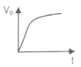
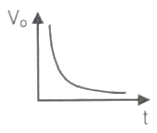
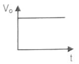
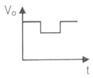
(정답률: 73%)
7. 다음 중 가장 효율이 좋은 증폭방식은?
- A급
- B급
- C급
- AB급
(정답률: 79%)
8. 다음 발진기 중 정현파 발진기에 속하는 것은?
- 하틀리 발진기
- 멀티 바이브레이터
- 블로킹 발진기
- 톱니파 발진기
(정답률: 71%)
9. 수정 발진기는 어떤 현상을 이용하는가?
- 피에조(Piezo) 현상
- 과도(Transient) 현상
- 지연(Delay) 현상
- 히스테리시스(Hysteresis) 현상
(정답률: 82%)
10. 다음 회로에서 출력(Vout) 진폭을 결정하는데 직접적인 영향을 주지 않는 것은?
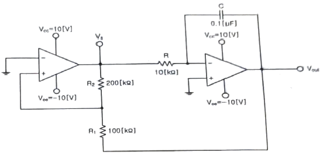
- R1
- R2
- R
- Vs
(정답률: 73%)
11. 30[%] 변조된 진폭 변조파의 출력이 200[W]일 때 반송파 전력은 약 몇 [W]인가?
- 154.1[W]
- 191.4[W]
- 227.4[W]
- 258.2[W]
(정답률: 63%)
12. 1[MHz]의 반송파를 2[kHz]의 신호주파수로 진폭변조하는 경우 출력측에 나타나는 주파수 성분은? (단, 변조도 m=1 이다.)
- 상측파대: 1,002[kHz]
- 상측파대: 900[kHz]
- 하측파대: 500[kHz]
- 하측파대: 500[MHz]
(정답률: 79%)
13. 다음 중 PPM을 PAM이나 PWM으로 변환하기 위해 사용되는 회로로 알맞은 것은?
- 미분회로
- 적분회로
- 쌍안정 멀티바이브레이터
- 단안정 멀티바이브레이터
(정답률: 73%)
14. 다음 중 음성 신호의 송신측 PCM(Pulse Code Modulation) 과정이 아닌 것은?
- 표본화
- 부호화
- 양자화
- 복호화
(정답률: 82%)
15. 다음 중 펄스의 지연 시간(Delay Time)으로 옳은 것은?
- 최대 진폭의 10[%]에서 90[%]까지 상승하는데 걸리는 시간
- 최대 진폭의 90[%]에서 10[%]까지 하강하는데 걸리는 시간
- 입력펄스가 들어온 후 출력 펄스가 최대 진폭의 10[%]가 되기까지 걸리는 시간
- 입력펄스가 끝난 후 출력 펄스가 최대 진폭의 90[%]로 감소하는데 걸리는 시간
(정답률: 74%)
16. 다음 중 슈미트 트리거(Schmitt Trigger) 회로와 관련 없는 것은?
- 전압 비교회로
- 쌍안정 회로
- 방형파 발생회로
- 무안정 회로
(정답률: 63%)
17. 다음에 열거하는 회로 중에서 일반적으로 플립플롭을 이용하여 구성하는 회로가 아닌 것은?
- 시프트 레지스터
- 카운터
- 분주기
- 전가산기
(정답률: 74%)
18. 다음 논리회로는 어떠한 기능을 수행하는가?
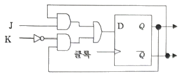
- 존슨 카운터
- D 플립플롭을 이용한 J-K 플리플롭의 구현
- 클록 신호의 2 분주기
- 플립플롭을 이용한 랜덤 수 발생기
(정답률: 83%)
19. 다음 중 레지스터의 주기능에 해당하는 것은?
- 스위칭 기능
- 데이터의 일시 저장
- 펄스 발생기
- 회로 동기장치
(정답률: 80%)
20. 다음 중 BCD부호를 10진수로, 2진수를 8진수나 16진수로 변환하기 위해 사용되는 회로는?
- 디코더
- 인코더
- 멀티플렉서
- 디멀티플렉서
(정답률: 73%)
2과목: 무선통신 기기
21. AM에서 피변조파의 전압 VAM=(100+60cos2π400t)sin2π×106t일 때 변조도는 몇[%]인가?
- 30[%]
- 40[%]
- 50[%]
- 60[%]
(정답률: 67%)
22. 다음 중 진폭변조(AM)에서 과변조가 발생한 경우 일어나는 현상이 아닌 것은?
- 피변조파에 많은 고조파가 포함된다.
- 점유 주파수 대역폭이 넓어지게 된다.
- 다른 통신에 혼신을 준다.
- 수신기에 과부하가 걸린다.
(정답률: 68%)
23. 다음 중 AM송신기의 기본 구성부가 아닌 것은?
- 완충 증폭부
- 체배 증폭부
- 중간주파 증폭부
- 전력 증폭부
(정답률: 67%)
24. SSB 수신기의 스피치 클라리파이어(Speech Clarifier)사용 목적은?
- 반송파와 국부발진 주파수와의 편차를 적게하기 위하여
- 수신기의 선택 특성을 높이기 위하여
- 수신기의 이득을 높이기 위하여
- 수신기의 대역폭을 향상 시키기 위하여
(정답률: 62%)
25. 80[MHz]의 반송파를 10[kHz]의 신호 주파수로 FM변조했을 때 최대 주파수 편이가 ±60[kHz]이면 변조지수는 얼마인가?
- 4
- 6
- 8
- 12
(정답률: 73%)
26. 다음 중 PLL(Phase Locked Loop)의 용도로 가장 적합한 것은?
- PCM 신호의 복조
- FM 신호의 복조
- SSB 신호의 필터
- DM 신호의 복조
(정답률: 66%)
27. 다음 중 디지털 데이터 0과 1을 아날로그 통신망을 사용해 전송할 때 반송파의 위상에 실어 보내는 변조 기술은?
- ASK(Amplitude Shift Keying)
- FSK(Frequency Shift Keying)
- PSK(Phase Shift Keying)
- PCM(Pulse Code Modulation)
(정답률: 72%)
28. 다음 중 펄스식 레이더를 널리 사용하는 이유로 관계가 먼 것은?
- 송신 펄스의 유지 시간 내에 반사 펄스를 수신할 수 있어 상호 간섭이 적다.
- 출력의 능률을 올릴 수 있다.
- 예민한 빔을 얻을 수 있어 방위 분해능을 높게 할 수 있다.
- 점유 주파수 대역폭을 줄일 수 있다.
(정답률: 63%)
29. 국제 위성통신에 사용되는 C-Band 주파수대역으로 올바른 것은?
- 2~4[GHz]
- 4~8[GHz]
- 8~12[GHz]
- 18~27[GHz]
(정답률: 71%)
30. 다음 중 GPS시스템의 위성군에 대한 설명으로 적합하지 않은 것은?
- 지상고도 약 20,183[km]에서 원에 가까운 타윈궤도를 돌고 있다.
- 총 6개의 궤도면과 각 궤도면에는 최소 4개의 위성이 존재한다.
- 각 위성마다 PRN 코드를 발생하고 있어 위성들을 구분할 수 있다.
- 모두 26개의 위성으로 구성되며 이 중 22개는 항법에 사용되고 4개는 예비용이다.
(정답률: 75%)
31. 다음 중 자신의 영역에 등록된 이동국에 대하여 가입자 정보와 위치 정보를 저장하고 관리하는 시스템은?
- VLR
- OMC
- AUC
- HLR
(정답률: 70%)
32. 다음 중 시분할 다중화 접속 구조의 특징에 해당하는 것은?
- 심한 심볼간 간섭
- 높은 기지국 비용
- 낮은 호 전환
- 간단한 하드웨어
(정답률: 64%)
33. 다음 중 LTE에 사용되는 MIMO(Multiple Input Multiple Output)에 대한 설명으로 틀린 것은?
- Multiple Antenna 사용
- Transmit Diversity 사용으로 신호품질향상
- Spatial Multiplexing 사용으로 주파수 효율향상
- CS Fallback 사용으로 데이터 용량증가
(정답률: 76%)
34. 다음 중 송신기의 스퓨리어스 발사를 줄이는 방법으로 틀린 것은?
- 전력 증폭기의 동작각을 크게 한다.
- 출력결합회로의 Q를 높인다.
- 저조파에 대한 트랩(Trap)회로를 삽입한다.
- 송신기와 급전선 사이에 HPF를 삽입하여 고조파를 제거한다.
(정답률: 63%)
35. 다음 중 수신기의 S/N 비를 개선하기 위한 방법으로 틀린 것은?
- 주파수 변환 이득을 크게 한다.
- 수신기 대역폭을 넓힌다.
- 믹서 전단에 저잡음 증폭기를 설치한다.
- 국부 발진기의 출력에 필터를 설치한다.
(정답률: 73%)
36. 다음 중 전파가 전리층에 들어갔을 때 일어나는 현상이 아닌 것은?
- 전파의 굴절
- 감쇠작용
- 편파면의 회절
- 라디오 덕트(Radio Duct) 현상
(정답률: 71%)
37. 다음 중 휴대단말기의 성능을 검증하기 위해 차량을 이용한 주행시험(Driving Test)을 진행할 경우, 차량 시거잭(Cigar Jack)전원에 노트북 및 휴대전화 충전기를 연결하고자 한다. 이 때 필요한 장치는 무엇인가?
- UPS(Uninterruptible Power Supply)
- 인버터(Inverter)
- AVR(Automatic Voltage Regulator)
- 정류기(Rectifier)
(정답률: 78%)
38. 다음 중 무선송신기의 종합 특성을 나타낸 것으로 틀린 것은?
- 점유주파수대폭
- 스퓨리어스 발사강도
- 주파수 안정도
- 영상주파수 선택도
(정답률: 69%)
39. 다음 중 수신기 시험을 할 경우 더미안테나를 사용하는 이유로 옳은 것은?
- 표준입력 신호를 공급하기 위하여
- 수신기의 부차적 전파 발사를 억제하기 위하여
- 수신기의 입력레벨을 감쇠시키기 위하여
- 안테나에 의한 입력회로의 등가회로를 구성하기 위하여
(정답률: 72%)
40. 다음 중 λ/4 수직접지안테나의 실효고를 옳게 나타낸 것은?
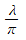
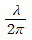
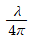
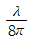
(정답률: 74%)
3과목: 안테나 개론
41. 자유공간의 특성 임피던스를 잘못 표현한 것은?
- εE
- E/H
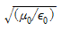
- 120π
(정답률: 73%)
42. 맥스웰 방정식에서
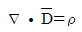
에 대한 설명으로 옳은 것은?- 자계의 변화가 없으면 자계의 형태로 존재한다.
- 변화하는 전계에 의해 수직방향의 자계가 발생한다.
- 자계의 발생은 전하의 이동과 관련 없다.
- 전계는 전하에 의해 형성된다.
(정답률: 60%)
43. 다음 중 전계와 자계에 대한 설명으로 옳은 것은?
- 자기력선은 발산이 있으나 전기력선은 없다.
- 전계와 자계 모두 에너지 보존법칙이 성립한다.
- 전계는 전류 및 자하에 의하여 형성된다.
- 전기력선은 항상 폐곡선을 형성한다.
(정답률: 76%)
44. 전송 선로의 특성 임피던스가 50+j0.01[Ω]이고 부하 임피던스가 73-j42.5[Ω]일 경우 정재파비는 얼마인가?
- 2.21
- 2.37
- 3.67
- 4.63
(정답률: 50%)
45. 다음 중 정재파비(VSWR)에 대한 설명으로 틀린 것은?
- 전압 정재파비는 정재파의 최대 전압과 최소 전압의 비로 정의된다.
- 전류 정재파비는 정재파의 최대 전류와 최소 전류의 비로 정의된다.
- 선로상에서 근접한 최대치와 다음 최대치의 간격은 반파장거리이다.
- 임피던스가 완전히 정합된 경우 정재파비 S=0의 관계에 있다.
(정답률: 75%)
46. 전송선로에서 전압투과계수를 바르게 나타낸 식은?
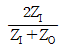
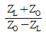
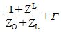
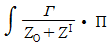
(정답률: 58%)
47. 임피던스 정합을 위한 방법의 하나로 λ/4변환기를 이용해서 복소 부하 임피던스 선로를 실수 임피던스로 변환하여 정합을 할 수 있다. 이때 실수 부하 임피던스로 변환하기 위한 방법으로 활용되는 것이 아닌 것은?
- 직렬 리액티브 스터브를 적절히 사용한다.
- 병렬 리액티브 스터브를 적절히 사용한다.
- 부하와 변환기 사이의 길이를 적절히 조정한다.
- 공동 공진기를 부착한다.
(정답률: 65%)
48. 무손실 전송선로의 특성 임피던스가 75[Ω]이고, 흐르는 전류의 최대값과 최소값이 각각 500[mA]과 400[mA]인 때 이 전송선로를 흐르는 전력은 몇[W]인가?
- 15[W]
- 200[W]
- 0.266[W]
- 7.5[W]
(정답률: 53%)
49. 방사저항이 75[Ω]이고 손실저항이 20[Ω]인 안테나의 방사효율은 얼마인가?
- 약 21[%]
- 약 27[%]
- 약 42[%]
- 약 79[%]
(정답률: 60%)
50. 임의의 송수신 지점간 무선통신에서 전송거리가 1[km]에서 10[km]로 증가 시 자유공간의 전송손실 특성으로 맞는 것은?
- 손실이 6[dB] 증가한다.
- 손실이 10[dB] 증가한다.
- 손실이 20[dB] 증가한다.
- 손실이 40[dB] 증가한다.
(정답률: 69%)
51. 면적이 0.636[m2], 권수가 50회인 루프 안테나로 3[MHz] 전파를 복사시키려고 한다. 이 안테나의 복사저항은 약 얼마인가?
- 0.32[Ω]
- 1.5[Ω]
- 17.5[Ω]
- 21.5[Ω]
(정답률: 38%)
52. 다음 중 통신위성에 장착하는 안테나로 적합하지 않은 것은?
- 헤리컬 안테나
- 파라볼라 안테나
- 대수주기 안테나
- 무지향성 안테나
(정답률: 61%)
53. 다음 그림과 같은 안테나 접지방식은?
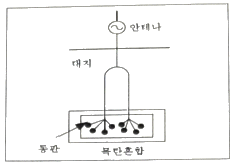
- 심굴 접지
- 다중 접지
- 가상 접지
- 방사상 접지
(정답률: 77%)
54. 다음 중 장중파대 안테나 특징으로 틀린 것은?
- 주요 전파는 지표파이다.
- 접지 저항이 작고 이득이 높다.
- 전력 효율이 떨어지고 설치비가 높다.
- 기본 안테나는 λ/4 수직 접지 안테나이다.
(정답률: 53%)
55. 다음 중 전파투시도(지형단면도)에 대한 설명으로 틀린 것은?
- 전파통로상에서 수평방향의 장애물을 살펴볼 때 편리하다.
- 전파통로를 나타내는 지구 단면도로 Profile Map이라고도 한다.
- 등가지구 반경계수 K를 고려하여 작성해야 한다.
- 전파통로를 직선으로 취급할 수 있게 된다.
(정답률: 67%)
56. 가시거리 통신에서 두 지점간의 자유공간 전파손실이 130[dB]이었다. 이 상태에서 주파수를 1/4로 줄이고 거리를 2배로 하면 전파손실은 얼마인가?
- 124[dB]
- 127[dB]
- 130[dB]
- 136[dB]
(정답률: 59%)
57. A의 주파수는 720[KHz]이고 B의 주파수는 640[KHz]일 경우 A와 B의 파장 비율은?
- 8:7
- 7:8
- 9:8
- 8:9
(정답률: 73%)
58. 야간에 원거리 중파방송의 라디오가 잘 들리는 이유는 무엇인가?
- 지표파가 잘 전파되므로
- 산란파가 잘 전파되므로
- D층의 흡수가 적으므로
- 페이딩 현상이 적으므로
(정답률: 72%)
59. 레이더의 안테나로부터 목표물을 향하여 전파를 발사하여 수신하는 데 0.1[μs]가 걸렸다면 목표물까지의 거리는 얼마인가?
- 5[m]
- 15[m]
- 25[m]
- 35[m]
(정답률: 67%)
60. 중파방송에서 주로 사용되는 전파방식은?
- 공간파
- 지표파
- 회절파
- 직접파
(정답률: 74%)
4과목: 전자계산기 일반 및 무선설비기준
61. 다음 중 Access Time이 빠른 순서로 나열된 것은?
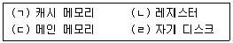
- (ㄴ)-(ㄱ)-(ㄷ)-(ㄹ)
- (ㄱ)-(ㄴ)-(ㄹ)-(ㄷ)
- (ㄴ)-(ㄷ)-(ㄹ)-(ㄱ)
- (ㄴ)-(ㄷ)-(ㄱ)-(ㄹ)
(정답률: 71%)
62. 다음 중 동적 램(Dynamic RAM)의 특징이 아닌 것은?
- 정적 램(Static RAM)에 비하여 회로 구조가 간단하고 집적도가 높다.
- 정적 램(Static RAM)에 비하여 속도가 빠르다.
- 정적 램(Static RAM)에 비하여 대용량 기억장치에서 주로 사용된다.
- 정적 램(Static RAM)에 비하여 소비전력이 비교적 적다.
(정답률: 69%)
63. 다음 문장이 설명하는 장치는?
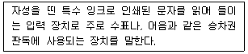
- OMR(Optical Mark Reader)
- OCR(Optical Character Recognition)
- MICR(Magnetic Ink Character Recognition)
- Digitizer
(정답률: 68%)
64. 10진수 20에 대해 2진법, 8진법 및 16진법의 표현으로 옳은 것은?
- 10010, 23, 13
- 10010, 24, 14
- 10100, 23, 13
- 10100, 24, 14
(정답률: 68%)
65. 2개의 자료 “11101100“과 ”01101110“이 ALU에서 AND 연산이 이루어졌을 때, 그 결과는 어떻게 되는가?
- 01101111
- 00101100
- 01101101
- 01101100
(정답률: 65%)
66. 다음 중 비선형 구조와 선형 구조가 옳게 짝지어진 것은?
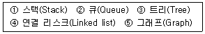
- 비선형구조: ①,②,⑤ 선형구조: ③,④
- 비선형구조: ③,⑤ 선형구조: ①,②,④
- 비선형구조: ①,②,③ 선형구조: ④,⑤
- 비선형구조: ③ 선형구조: ①,②,④,⑤
(정답률: 73%)
67. 다음과 같은 상황에서 FCFS 알고리즘을 적용하였을 때 프로세스 완료 순서는?
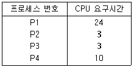
- P1-P2-P3-P4
- P2-P3-P4-P1
- P4-P3-P2-P1
- P1-P4-P2-P3
(정답률: 71%)
68. 다음 중 Memory Mapped I/O 방식에 대한 설명으로 틀린 것은?
- I/O 장치를 메모리에 접근하는 것처럼 접근하는 방식이다.
- 메모리 제어선(Memory Control Line)과 I/O 제어선(I/O Control Line)이 분리되어 있다.
- 메모리의 일부 공간을 I/O 포트에 할당한다.
- 메모리와 I/O가 주소 공간(Address Space)을 공유한다.
(정답률: 70%)
69. 프로그램의 에러나 디버깅 등의 목적을 수행하기 위해 메모리에 저장된 내용의 일부 또는 전부를 화면이나 프린터, 디스크 파일 등으로 출력하는 것을 무엇이라 하는가?
- 링커(Linker)
- 디버거(Debugger)
- 로더(Loader)
- 메모리 덤프(Memory Dump)
(정답률: 70%)
70. 다음 보기의 3-주소 명령어에 대한 설명이 옳은 것은? (단, R2과 R3는 Source Operand, R1은 Destination Operand라 가정한다.)
- R1과 R3을 더하여 R2에 넣고, 이후 R2와 R3을 더한 값을 R1에 넣는다.
- R2와 R3을 더하여 R2에 넣고, 이후 R2와 R1을 더한 값을 R1에 넣는다.
- R2와 R3을 더하여 R1에 값을 넣는다.
- R1과 R2, R3을 더하여 R1에 값을 넣는다.
(정답률: 66%)
71. 다음 괄호 안에 들어갈 내용으로 알맞은 것은?
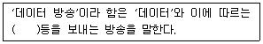
- 음성·신호·음향
- 기호·문언·음향
- 영상·음성·음향
- 영상·문언·음향
(정답률: 75%)
72. 다음중 전파법 제30조에 따라 ”시설자, 무선통신 업무에 종사하는 자 및 무선설비를 이용하는 자는 통신보안 책임자의 지정, 통신보안 교육의 이수 등“에 대하여 통신보안에 관한 사항을 지켜야 한다. 이러한 통신보안의 교육등에 필요한 사항을 지정하고 있는 것은?
- 전파법
- 전파법시행령
- 과학기술정보통신부 고시
- 무선설비규칙
(정답률: 66%)
73. 다음 중 주파수 분배 시 고려하여야 할 사항이 아닌 것은?
- 전파이용 기술의 발전추세
- 국내의 주파수 사용 동향
- 주파수의 이용현황 등 국내의 주파수 이용여건
- 전파를 이용하는 서비스에 대한 수요
(정답률: 63%)
74. 아마추어국의 개설조건 중 고정 아마추어국의 경우 안테나공급전력은 몇 와트 이하이어야 하는가?
- 1,000와트
- 500와트
- 200와트
- 100와트
(정답률: 73%)
75. 다음 중 전파사용료 부과를 전부 면제할 수 있는 대상에 해당하지 않는 무선국은?
- 전기통신역무를 제공하기 위한 무선국
- 국가가 개설한 무선국
- 지방자치단체가 개설한 무선국
- 방송국 중 영리를 목적으로 하지 아니하는 방송국
(정답률: 68%)
76. 다음 중 정보통신공사 사용전검사 신청서의 기재사항이 아닌 것은?
- 신청인
- 시공자
- 감리인
- 공사종류
(정답률: 76%)
77. 다음 중 정보통신공사의 공사비 산정 기준을 정하는 방법으로 적합하지 않은 것은?
- 표준품셈
- 일반 시장단가
- 공사업 실태 조사결과
- 공사원가 산정기준 조사결과
(정답률: 77%)
78. 적합성평가기준과 관련된 사항에 대한 변경신고를 하지 않게 된 경우 1차 위반시의 행정처분은 무엇인가?
- 파기명령
- 수입중지
- 시정명령
- 생산중지
(정답률: 80%)
79. 108[MHz] 내지 118[MHz] 주파수의 전파를 전방향에 발사하는 회전식 무선표지업무를 행하는 무선설비는?
- 글라이드 패스(Glide Path)
- 마아커 비콘(Marker Radio Beacon)
- 전방향표지시설(VHF Omni-directional Range)
- Z 마아커(Zone Marker)
(정답률: 73%)
80. 다음은 의료용 전파응용설비의 안전시설기준이다. 괄호에 들어갈 내용으로 적합한 것은?
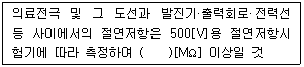
- 10
- 30
- 50
- 70
(정답률: 63%)